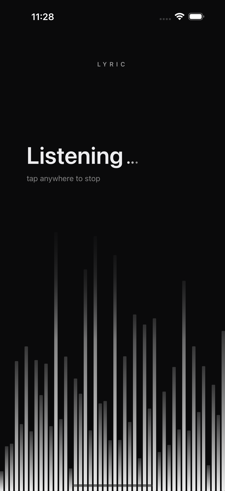
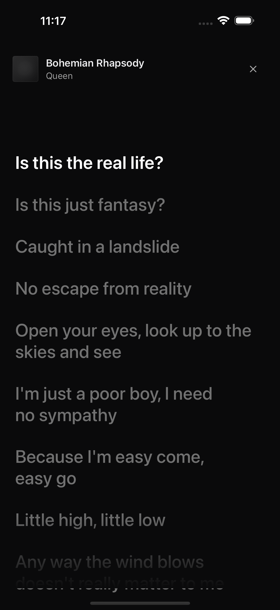
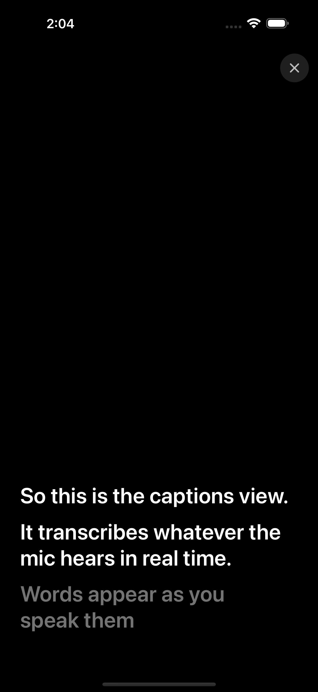
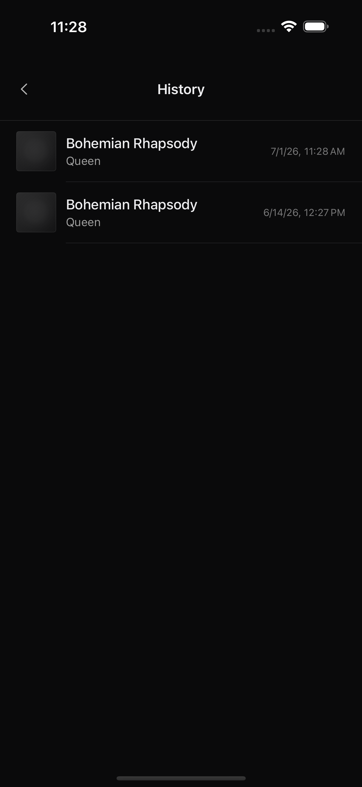

Lyrics that keep up.
Hold your phone up while a song plays. Live Lyric identifies it through the mic and shows time-synced lyrics — portrait for reading, landscape for singing along across the room.


From audio to lyrics in about a second.
ShazamKit identifies the song, LRCLib supplies synced lyrics, and a playback clock keeps the current line highlighted. No accounts, no subscriptions, no third-party SDKs.
Tap and listen.
The app starts ShazamKit and shows a live waveform as it listens. It works on any audio source: a speaker, the radio, a car stereo, or someone else's phone.
- Works without an Apple Music subscription
- Re-identifies every ~10 seconds to correct drift
- Rejects wild backward jumps from repeated choruses
Read along.
In portrait, the full lyric scroll sits behind a bold highlight on the active line. Tap any line to jump to that moment. When LRCLib serves enhanced timing, individual words light up as they're sung.
- Time-synced LRC from LRCLib
- Plain-text fallback via Genius
- 30-day on-disk cache
Live captions, too.
Switch to Captions mode and the app transcribes whatever the mic hears — conversations, presentations, or any spoken audio — in a full-screen rolling subtitle view.
- On-device speech recognition on iOS 26+
- Partial results stream in as people speak
- Finalized lines stack above the live partial

Built like a native app should be.
History, replay, privacy.
The last 20 matched songs are stored locally. Tap one to reopen its lyrics instantly. A privacy manifest declares every sensitive API, and the cache is excluded from iCloud backups.
- 48 XCTest cases covering sync, parsing, and network layers
- Five-layer architecture with no shared mutable state
- Dynamic Type and VoiceOver support throughout

Identify, sync, sing.
A personal iOS app for live lyrics — SwiftUI, ShazamKit, Combine, and zero third-party SDKs.